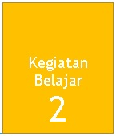
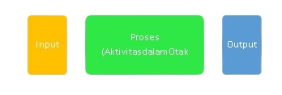
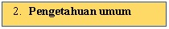
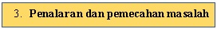

Kognitif dan Faktornya
Dalam perspektif psikologi kognitif, inteligensi berkaitan dengan bentuk-bentuk kognitif tingkat tinggi yaitu pembentukan konsep, penalaran, pemecahan masalah, kreativitas, memori dan persepsi (Solso dalam Widiana, 2009:62). Fungsi intelektual yang juga berkaitan dengan inteligensi terjadi ketika ada informasi yang diperoleh dari dunia luar, kemudian informasi tersebut disimpan dalam memori, ditransformasikan, yang pada akhirnya dihasilkan output. Proses tersebut secara garis besar dapat digambarkan sebagai berikut :

Otak terdiri atas banyak neuron yang menerima input berupa informasiinformasi yang kemudian dikelola di dalam otak sehingga menghasilkan output. Dalam pengelolaan informasi tersebut terjadi aktivitas-aktivitas sebagai berikut (Solso dalam Widiana, 2009).
Penelitian Hunt merupakan penelitian pertama mengenai intelegensi yang dilakukan oleh psikolog kognitif yang mempertanyakan, apa perbedaan dalam pemrosesan informasi antara individu yang memiliki kemampuan tinggi dengan kemampuan rendah? Subjek penelitian diberi pertanyaan yang membutuhkan proses pencarian informasi dalam memori jangka panjang. Dalam penelitian ini waktu pencarian informasi berperan sebagai variabel tergantungnya, sedangkan kemampuan subjek sebagai variabel bebas. Peneliti memberikan pasangan huruf pada subjek, kemudian subjek diminta menjawab apakah pasangan huruf tersebut sama. Persamaan dari huruf-huruf tersebut dapat berupa persamaan bentuk (A-A) atau persamaan nama huruf (A-a). Dalam perspektif pemrosesan informasi, persamaan bentuk melibatkan memori jangka pendek dan pengambilan keputusan. Sedangkan persamaan nama melibatkan memori jangka pendek, memori jangka panjang (ketika mengingat nama huruf), serta membuat keputusan. Hasil penelitian menunjukkan adanya persamaan waktu reaksi pada persamaan bentuk (A-A) antara kelompok yang berkemampuan tinggi dan yang berkemampuan rendah. Sedangkan pada persamaan nama (Aa), kelompok berkemampuan rendah membutuhkan waktu yang lebih lama dibandingkan kelompok berkemampuan tinggi.
Terdapat dua hal yang dapat disimpulkan dari penelitian Hunt :
(1) Paradigma pemrosesan informasi menyediakan berbagai prosedur yang berguna bagi studi mengenai inteligensi.
(2) Memori jangka pendek berkaitan dengan inteligensi verbal.

Pengetahuan umum dianggap sebagai bagian dari inteligensi sejak awal berkembangnya tes inteligensi. Tes yang berkaitan dengan pengetahuan umum memberikan informasi pengetahuan seseorang pada saat ini dan kemampuannya dalam memperoleh kembali pengetahuan. Informasi ini dapat memberikan informasi mengenai sejarah intelektual pada masa lalu dan memprediksi kinerja pada masa yang akan datang.

Menurut pendapat dari ahli psikologi, mereka menyetujui bahwa penalaran dan pemecahan masalah merupakan unsur yang penting dalam inteligensi manusia. Kemampuan penalaran yang sering disebut fluid intelligence adalah kemampuan untuk memproses informasi yang ada dalam penyimpanan memori jangka pendek (Meisenberg, 2003). Sistem berpikir dari otak yang bekerja pada proses penalaran disebut working memory. Beberapa daerah dari otak yang berkaitan dengan working memory aktif selama proses penalaran.
Teori inteligensi pada perspektif psikologi kognitif adalah (Yusuf, 2009) :
1. Triarchic theory
Stenberg mengemukakan triarchic theory yang terdiri atas tiga subteori mengenai intelegensi yaitu:
a. Contextual Intelligence behavior
Dalam subteori ini meliputi kemampuan: (1) mampu untuk beradaptasi terhadap perubahan lingkungan, (2) mengubah dunia/lingkungan untuk mengoptimalkan peluang-peluang, dan (3) mampu memecahkan masalah.
b. Experiental Intelligence behavior
Subteori ini meliputi kemampuan: (1) mampu merumuskan gagasan-gagasan baru dan mengkombinasikan fakta-fakta yang tidak berhubungan, dan (2) mampu mengatasi masalah baru secara otomatis (cepat).
c. Componential Intelligence behavior
Dalam subteori ini meliputi kemampuan: (1) mampu untuk berpikir abstrak, (2) memproses informasi, dan (3) menentukan kebutuhan-kebutuhan apa yang akan dipenuhi.
Inti pemikiran perspektif kognitif yang diwakili oleh triarchic theory yang dikemukakan oleh Stenberg adalah proses intelektual yang berkaitan dengan inteligensi terjadi dengan diterimanya input berupa informasi sensori yang kemudian dibawa ke otak dimana pada otak terjadi aktivitas yang melibatkan memori, pengetahuan sampai dengan pemecahan masalah sehingga dapat dihasilkan output. Dengan inti pemikiran tersebut dapat disimpulkan teori inteligensi Triarchic theory yang merupakan perspektif kognitif memiliki landasan filosofi empirisme. Empirisme merupakan sebuah metode yang menekankan penggunaan panca indera sebagai sarana untuk mencapai pengetahuan, dengan pengalaman sebagai faktor utama. Dalam kaitannya dengan teori inteligensi Triarchic theory yang merupakan perspektif kognitif, pendapat John Locke mengenai inteligensi menjadi dasar berkembangnya teori inteligensi, bahwa pemikiran abstrak berkembang melalui sensasi dan refleksi (Widiana, 2009).
Perkembangan kognitif memiliki beberapa factor, diantaranya adalah:
Faktor hereditas yaitu semenjak dalam kandungan anak telah memiliki sifat-sifat yang menentukan daya kerja intelektualnya. Hal ini disebabkan karena masing-masing dari kita memulai kehidupan sebagai suatu sel tunggal yang beratnya kira-kira seperdua puluh juta ons. Potongan benda yang sangat kecil ini menyimpan kode genetik kita, informasi tentang akan menjadi siapa kita. Instruksi ini mengatur pertumbuhan dari sel tunggal itu menjadi seorang yang terdiri dari sel tunggal itu menjadi seseorang yang terdiri dari bertrilyun-trilyun sel, yang masing-masing berisi satu tiruan (replica) kode genetik asli yang sempurna.
Berdasarkan beberapa penelitian menunjukkkan bahwa peranan faktor hereditas terhadap perkembangan kognitif atau intelegensi seseorang terutama karena adanya rangkaian hubungan antara pertalian keluarga dengan ukuran IQ. Sebagaimana hasil penelitian dari Erlenmeyer Kimling dan Jarvik, 1963, bahwa umumnya individu yang mempunyai hubungan keluarga cenderung mempunyai IQ relatif sama atau similar. Riset lain yang dilakukan oleh Jenks, 1972 dan Munsinger, 1978 menyimpulkan bahwa IQ anak lebih similar dengan IQ orang tuanya.
Dengan demikian, secara potensial anak telah membawa kemungkinan, apakah akan menjadi kemampuan berfikir setaraf normal, di atas normal atau di bawah normal. Tetapi potensi tersebut tidak akan dapat berkembang secara optimal tanpa adanya lingkungan yang dapat memberi kesempatan untuk berkembang. Oleh karena itu, peranan hereditas sangat menentukan perkembangan intelektual anak.
Tingkat kognitif atau intelegensi seseorang sangatlah ditentukan oleh pengalaman dan pengetahuan yang diperolehnya dari lingkungan. Adapun faktor lingkungan dibagi menjadi dua unsur lingkungan yang sangat penting peranannya dalam mempengaruhi perkembangan inteleg anak, yaitu keluarga dan sekolah.
a. Keluarga
Keluarga merupakan lingkungan pendidikan pertama dan utama. Dikatakan pertama karena sejak anak ada dalam kandungan dan lahir berada dalam keluarga. Dikatakan utama karena keluarga merupakan yang sangat penting dalam pendidikan untuk membentuk pribadi yang utuh. Semua aspek kepribadian dapat dibentuk di lingkungan ini.
Keluarga memiliki peranan yang sangat penting dalam upaya mengembangkan pribadi anak. Covey (dalam Yusuf, 2009) mengajukan empat prinsip peranan keluarga, yaitu:
a. Modelling (example of trustworthness).Orang tua adalah contoh atau model bagi anak. Tidak dapat disangkal bahwa contoh dari orang tua mempunyai pengaruh yang sangat kuat bagi anak. Ketika abert Schweitzer ditanya tentang bagaimana pengembangan anak, dia menjawab: “ada tiga prinsip, yaitu: pertama contoh, kedua contoh dan ketiga contoh”. Orang tua merupakan model yang pertama dan terdepan bagi anak (baik positif atau negatif) dan merupakan pola bagi “way of life” anak. Cara berfikir dan berbuat anak dibentuk oleh cara berfikir dan berbuat anak dibentuk oleh cara berfikir dan berbuat orang tuanya. Melalui “modelling” ini, orang tua telah mewariskan cara berfikirnya kepada anak, yang kadang-kadang sampai kepada generasi ketiga atau keempat. Oleh karena itu, maka peranan “modelling” orang tua bagi anak dipandang sebagai suatu hal yang sangat mendasar, suci dan perwujudan spritual. Melalui “modelling” ini juga anak akan belajar tentang 1) sikap proaktif, 2) sikap respek dan kasih sayang.
b. Mentoring yaitu kemampuan untuk menjalin atau membangun hubungan, investasi emosional (kasih sayang kepada orang lain) atau pemberian perlindungan kepada orang lain secara mendalam, jujur, pribadi dan tidak bersyarat. Kedalaman dan kejujuran atau keikhlasan memberikan perlindungan ini akan mendorong orang lain untuk bersikap terbuka dan mau menerima pengajaran, karena dalam diri mereka telah tertanam perasaan percaya. Orang tua merupakan mentor pertama bagi anak yang menjalin hubungan dan memberikan kasih sayang secara mendalam, baik secara positif atau negatif, orang tua mau tidak mau tetap menjadi mentor bagi anak. Orang tua menjadi sumber pertama bagi perkembangan perasaan anak: rasa aman atau tidak aman, dicintai atau dibenci.
Ada lima cara untuk memberikan kasih sayang kepada orang lain, yaitu
1) Empathizing; mendengarkan hati orang lain dengan hati sendiri;
2) Sharing: berbagi wawasan, emosi dan keyakinan;
3) Affirming: memberikan ketegasan (penguatan) kepada orang lain dengan kepercayaan. Penilaian, konfirmasi, apresiasi dan dorongan;
4) Praying: mendoakan orang lain secara ikhlas dari jiwa yang paling dalam; dan
5) Sacrificing; berkorban untuk diri orang lain.
c. Organizing: yaitu keluarga seperti perusahaan yang memerlukan tim kerja dan kerjasama antar anggota dalam menyelesaikan tugas tugas atau memenuhi kebutuhan kelauarga. Peran organizing adalah untuk meluruskan struktur dan sistem keluarga dalam rangka membantu menyesaikan hal-hal yang penting.
Teaching: orang tua berperan sebagai guru (pengajar) bagi anak-anaknya (anggota keluarga) tentang hukum-hukum dasar kehidupan. Melalui pengajaran ini orang tua berusaha memberdayakan (empowering) prinsip-prinsip kehidupan, sehingga anak memahami dan melaksanakannya. Mereka juga mempercayai prinsip tersebut dan juga dirinya sendiri sebab mereka telah terintegrasi artinya ada keseimbangan antara prinsip-prinsip yang universal dengan kebutuhan dirinya. Peran orang tua sebagai guru adalah menciptakan “conscious competence”; pada diri anak yaitu mereka mengalami tentang apa yang mereka kerjakan dan alasan tentang mengapa mereka mengerjakan itu.
b. Sekolah
Sekolah merupakan lembaga pendidikan formal yang secara sistematis melaksanakan program bimbingan, pengajaran, dan latihan dalam rangka membantu siswa agar mampu mengembangkan potensinya, baik yang menyangkut aspek moral-spiritual, intelektual, emosional, maupun sosial.
Hurlock (dalam Yusuf, 2009) mengemukakan bahwa sekolah merupakan faktor penentu bagi perkembangan kepribadian anak (siswa), baik dalam cara berpikir, bersikap maupun cara berperilaku. Sekolah berperan sebagai substitusi keluarga, dan guru substitusi orang tua. Ada beberapa alasan, mengapa sekolah memainkan peranan yang berarti bagi perkembangan kepribadian anak, yaitu (a) para siswa harus hadir di sekolah, (b) sekolah memberikan pengaruh kepada anak secara dini, seiring dengan perkembangan “konsep diri”-nya, (c) anak-anak banyak menghabiskan waktunya di sekolah daripada di tempat lain di luar rumah, (d) sekolah memberikan kesempatan kepada siswa untuk meraih suskes, dan (e) sekolah memberi kesempatan pertama kepada anak untuk menilai dirinya, dan kemampuannya secara realistik.